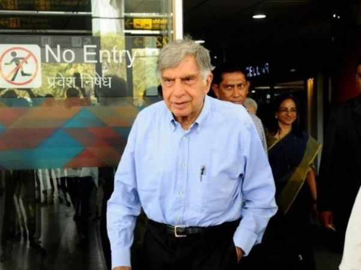
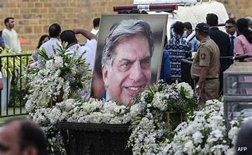
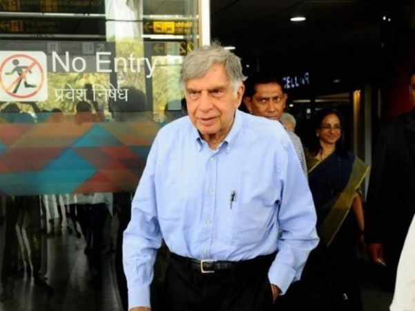
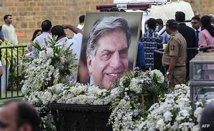

Ratan Tata
The Man Who Redefined Business with Heart
Services Made by Ratan Tata
Healthcare & Education Initiatives
Support for Startups & Innovation
Animal Welfare & Conservation
About Ratan Tata
Childhood & Education: Born on December 28, 1937, in Mumbai, Ratan Tata was raised by his grandmother after his parents separated. He studied architecture at Cornell University and later attended Harvard Business School for an advanced management program.
Love Life: He had a serious relationship while studying in the U.S., but circumstances prevented marriage. He remained unmarried throughout his life.
Journey with Tata Group: He joined Tata Group in 1962, working on the shop floor of Tata Steel. In 1991, he became Chairman of Tata Sons, leading the company to global expansion with acquisitions like Jaguar Land Rover and Corus Steel.
Bond with Shantanu Naidu: Shantanu, a young entrepreneur, met Tata in 2014 through his initiative Motopaws, which designed glow-in-the-dark collars for stray dogs. Tata supported his venture, and their friendship grew. Shantanu later became Tata’s assistant and launched Goodfellows, a startup connecting young companions with senior citizens.
Major Contributions:
- Philanthropy: Through Tata Trusts, he funded healthcare, education, and rural development initiatives.
- Housing & Mobility: He launched projects for low-cost housing and introduced the Tata Nano, aiming to provide affordable transportation.
- Disaster Relief & Social Welfare: He actively contributed to rebuilding communities affected by natural calamities.
- Support for Startups: He invested in numerous Indian startups, fostering entrepreneurship and innovation.
Passing & Legacy: Ratan Tata passed away on October 9, 2024, at the age of 86 in Mumbai. His contributions to industry and society made him one of India’s most respected figures, leaving behind a legacy of innovation, philanthropy, and leadership.
Gallery
 


